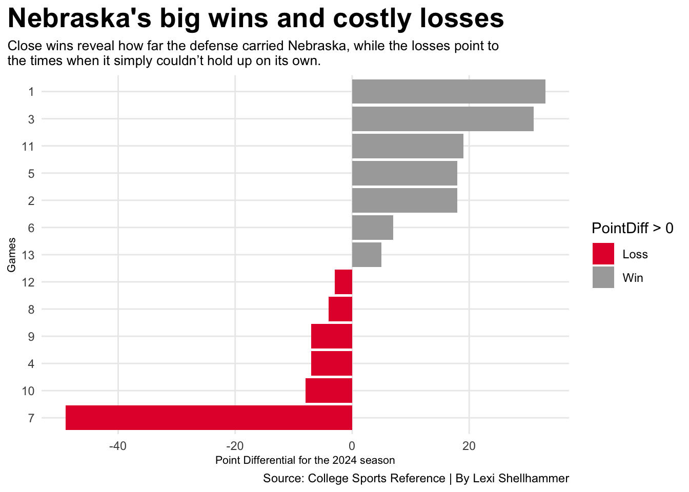
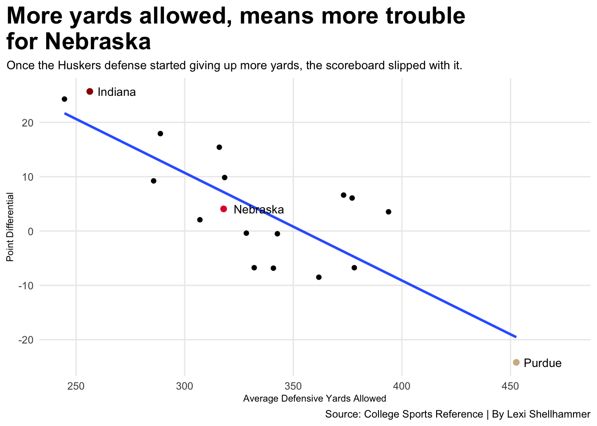
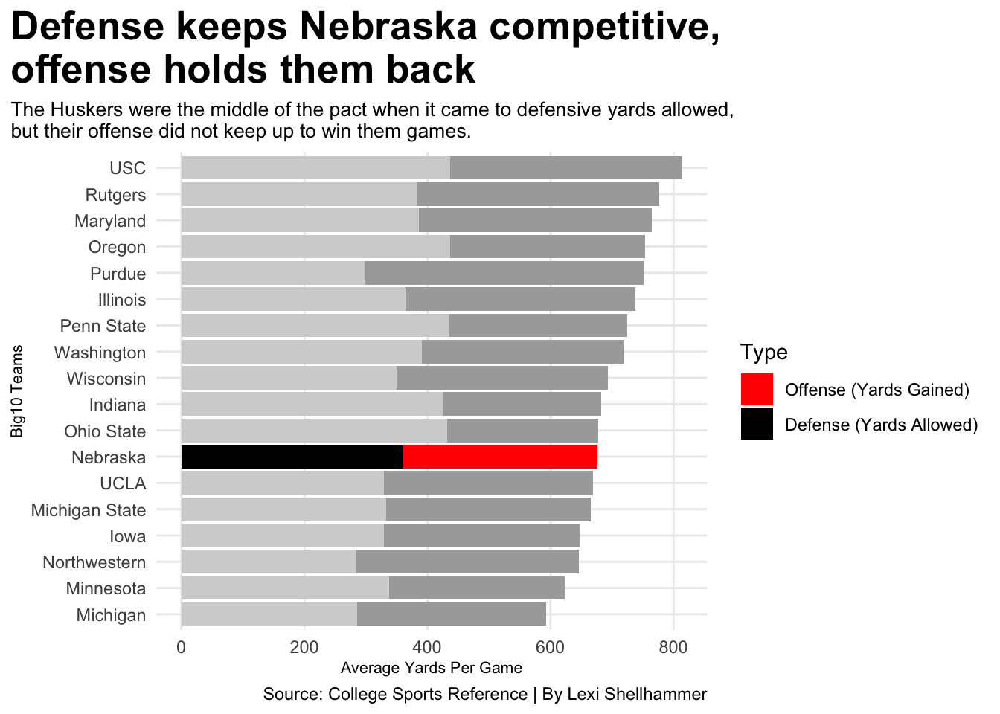
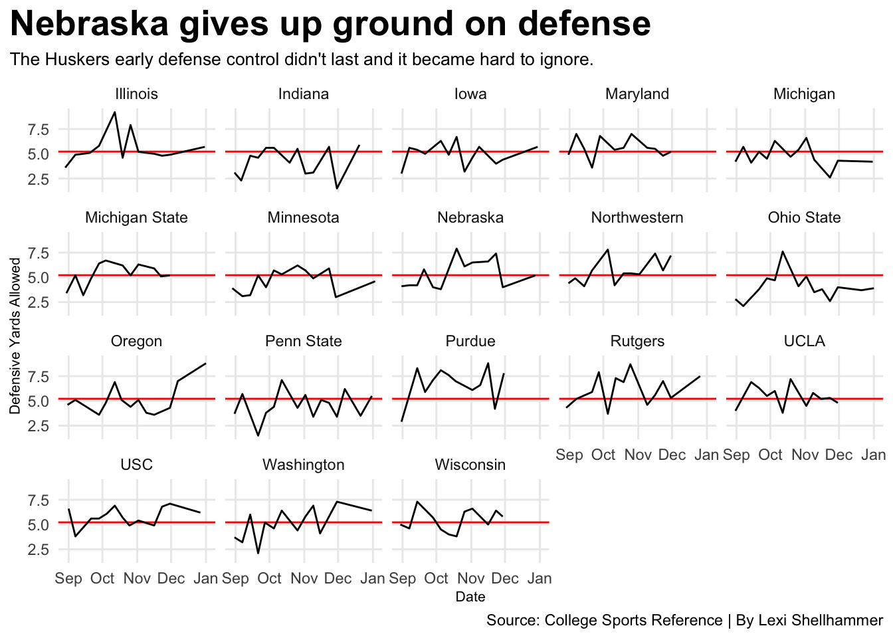

Is Nebraska’s defense good enough to carry a struggling offense?
collegefootball
defense
big10
nebraska
Author
Lexi Shellhammer
Published
November 17, 2025
“Nebraska football is BACK…” or at least, that’s what fans hoped. But was it?
The 2024–2025 season told a tough story. For many die-hard Huskers fans, it was a frustrating watch: Nebraska finished 12th in the Big Ten with a 3–6 conference record, far from the “we’re back” energy that kicked off the season. Instead of rising to the top, Nebraska found itself near the bottom of the conference standings.
Yet their overall record of 7–6 and a Pinstripe Bowl win paint a different picture, one that isn’t entirely bleak, but definitely complex. And that complexity leads to the question:
Is Nebraska’s defense good enough to carry a struggling offense?
Code
library(tidyverse)library(ggnewscale)logs <-read_csv("https://mattwaite.github.io/sportsdatafiles/footballlogs24.csv")logs <- logs |>mutate (PointDiff = TeamScore - OpponentScore)nu <- logs |>filter (Team =="Nebraska")ggplot(nu, aes(x =reorder(Game, PointDiff), y = PointDiff, fill = PointDiff >0)) +geom_col() +coord_flip() +scale_fill_manual(values =c("#E41C38", "darkgray"), labels =c("Loss", "Win")) +labs(x="Games", y="Point Differential for the 2024 season", title="Nebraska's big wins and costly losses", subtitle="Close wins reveal how far the defense carried Nebraska, while the losses point to \nthe times when it simply couldn’t hold up on its own.", caption="Source: College Sports Reference | By Lexi Shellhammer" ) +theme_minimal() +theme(plot.title =element_text(size =20, face ="bold"),axis.title =element_text(size =8), plot.subtitle =element_text(size=10), panel.grid.minor =element_blank(),plot.title.position ="plot" )

While Nebraska won some games comfortably, they also lost several close ones, suggesting their overall record might look worse than their competitiveness in most games. It highlights how small margins made a big difference in their season outcome.
Nebraska’s single major blowout, week 7 against Indiana, makes Nebraska look like a weak team. Without week 7 in the mix, Nebraska’s point differentials stay clustered to zero, reinforcing the idea that the Huskers were not consistently outmatched. The Huskers were consistently almost winning.
A team that loses tight games but wins by larger margins, in this case Nebraska, often signals a defense that keeps them competitive even when the offense isn’t producing enough points. In Nebraska’s case, the defense appears to have kept most games within reach, but the offense wasn’t always able to capitalize.
To understand if Nebraska’s defense impacted the outcome of the game, comparing yards allowed and how those performances translated into point differential is important.
Code
teamsum <- logs |>filter(Conference =="Big Ten Conference") |>group_by(Team)|>summarise(AvgPointsScored =mean(TeamScore),AvgPointsAllowed =mean(OpponentScore),AvgPointDiff =mean(TeamScore - OpponentScore),AvgYardsAllowed =mean(DefYards), AvgYardsGained =mean(OffensiveYards),TotalYardsGained =sum(OffensiveYards),TotalYardsAllowed =sum(DefYards),Wins =sum(Result =="W"),Games =n(),WinPct = Wins / Games )ggplot() +geom_point(data=teamsum, aes(x=AvgYardsAllowed, y=AvgPointDiff)) +geom_smooth(data=teamsum, aes(x=AvgYardsAllowed, y=AvgPointDiff), method="lm", se=FALSE) +geom_point(data =subset(teamsum, Team =="Nebraska"),aes(x = AvgYardsAllowed, y = AvgPointDiff),color ="#E41C38", size =2) +geom_point(data =subset(teamsum, Team =="Indiana"),aes(x = AvgYardsAllowed, y = AvgPointDiff),color ="#990000", size =2) +geom_point(data =subset(teamsum, Team =="Purdue"),aes(x = AvgYardsAllowed, y = AvgPointDiff),color ="#CFB991", size =2) +geom_text(data =subset(teamsum, Team %in%c("Nebraska", "Indiana", "Purdue")),aes(x = AvgYardsAllowed, y = AvgPointDiff, label = Team),hjust =-0.2, vjust =0.5, size =3.5) +expand_limits(x =max(teamsum$AvgYardsAllowed) *1.05) +labs(x="Average Defensive Yards Allowed", y="Point Differential", title="More yards allowed, means more trouble\nfor Nebraska", subtitle="Once the Huskers defense started giving up more yards, the scoreboard slipped with it. ", caption="Source: College Sports Reference | By Lexi Shellhammer" ) +theme_minimal() +theme(plot.title =element_text(size =20, face ="bold"),axis.title =element_text(size =8), plot.subtitle =element_text(size=10), panel.grid.minor =element_blank(),plot.title.position ="plot" )

Nebraska’s defense held opponents to relatively few yards, but that didn’t translate into big wins, their offense wasn’t efficient enough to turn a solid defense into comfortable margins of victory.
Indiana lead the pack with a few number of yards allowed that resulted to a high win differential that put them out on top.
Highlighting where Nebraska ranks in both offensive production and defensive stability, reveals just how big the gap was between what their defense held opponents to and what their offense could generate in return.
Code
teamsum <- logs |>filter(Conference =="Big Ten Conference") |>group_by(Team) |>summarise(AvgYardsGained =mean(OffensiveYards),AvgYardsAllowed =mean(DefYards) )teamsum_long <- teamsum |>pivot_longer(cols =c(AvgYardsGained, AvgYardsAllowed),names_to ="Type",values_to ="Yards" ) |>mutate(Highlight =case_when( Team =="Nebraska"~"Nebraska", Team =="Indiana"~"Indiana", Team =="Purdue"~"Purdue",TRUE~"Other" ))nulong <- teamsum_long |>filter(Team =="Nebraska")school_colors <-c("Nebraska"="#E41C38", "Indiana"="#990000", "Purdue"="#CFB991", "Other"="gray80")type_colors <-c("AvgYardsGained"="lightgrey","AvgYardsAllowed"="darkgrey")ggplot() +geom_bar(data=teamsum_long, aes(x =reorder(Team, Yards), weight = Yards, fill=Type))+scale_fill_manual(values = type_colors,labels =c("Offense (Yards Gained)", "Defense (Yards Allowed)")) +new_scale_fill() +geom_bar(data=nulong, aes(x =reorder(Team, Yards), weight = Yards, fill=Type))+scale_fill_manual(values =c("red", "black"),labels =c("Offense (Yards Gained)", "Defense (Yards Allowed)")) +coord_flip() +labs(x="Big10 Teams", y="Average Yards Per Game", title="Defense keeps Nebraska competitive,\noffense holds them back", subtitle="The Huskers were the middle of the pact when it came to defensive yards allowed,\nbut their offense did not keep up to win them games.", caption="Source: College Sports Reference | By Lexi Shellhammer" ) +theme_minimal() +theme(plot.title =element_text(size =20, face ="bold"),axis.title =element_text(size =8), plot.subtitle =element_text(size=10), panel.grid.minor =element_blank(),plot.title.position ="plot" )

Nebraska’s defense limited opponents’ yardage better than most, but their offense struggled to gain yards. This imbalance helps explain why Nebraska may have lost several close games. The defense performed well enough to win, but the offense couldn’t produce enough scoring opportunities.
Nebraska’s placement in the middle of the conference defensively but near the bottom offensively makes the gap even clearer, showing that while their defense kept games within reach, their offense simply couldn’t keep pace with the rest of the Big Ten.
How did Nebraska hold up defensively throughout the season compared to other Big Ten teams?
Code
big10 <- logs |>filter(Conference =="Big Ten Conference")ggplot() +geom_hline(yintercept=5.217241, colour="red") +geom_line(data=big10, aes(x=Date, y=DefAvg, group=Team)) +facet_wrap(~Team) +labs(x="Date", y="Defensive Yards Allowed", title="Nebraska gives up ground on defense", subtitle="The Huskers early defense control didn't last and it became hard to ignore.", caption="Source: College Sports Reference | By Lexi Shellhammer" ) +theme_minimal() +theme(plot.title =element_text(size =20, face ="bold"),axis.title =element_text(size =8), plot.subtitle =element_text(size=10), panel.grid.minor =element_blank(),plot.title.position ="plot" )

Across the Big Ten, most teams showed ups and downs, defensively, but Nebraska’s trend line is especially telling. Stating off solid at the beginning of the season, their defense slipped as the season intensified. Nebraska lacked stability in their defense.
Nebraska’s defense was good, but not good enough to carry an offense that underperformed. The defense kept gaes close and gave the Huskers multiple chances to win, but without a reliable offense, the team could not keep up.